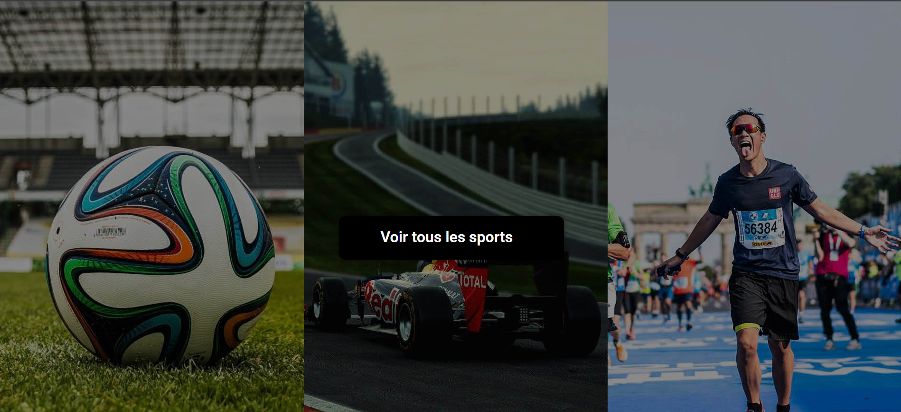
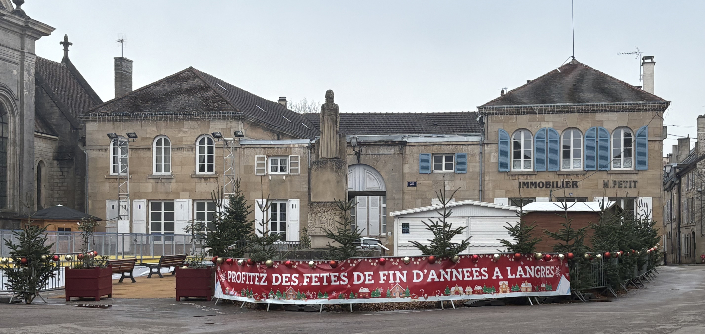

Projet 1 : Interview

Nous avons dû réaliser une interview sur une passion commune ou sur celle d'un membre du groupe.
Objectifs
- 1. CHOIX DU SUJET ET DU LIEU : La conception de notre interview sur la musculation a débuté par le choix du sujet, motivé par notre passion commune pour la musculation. Ensuite, nous avons sélectionné une salle de sport aux alentours de notre IUT comme lieu de tournage, afin d'offrir un cadre authentique et pertinent sans que l'on ait de gros problèmes de logistique.
- 2. AUTORISATIONS ET NÉGOCIATIONS : Avant de commencer le tournage, nous avons obtenu les autorisations nécessaires auprès du gérant de la salle. Cette étape cruciale a impliqué des négociations pour définir les conditions de tournage, les horaires, et les zones accessibles, tout en respectant la confidentialité des autres membres.
- 3. ÉLABORATION DU CONTENU ET DU SCRIPT : Pour le contenu de l'interview, nous avons élaboré un script mettant l'accent sur des aspects variés de la musculation, tels que les techniques d'entraînement, la nutrition, et les objectifs personnels. Nous avons veillé à inclure des démonstrations d'exercices pour rendre l'interview plus dynamique et informative.
- 4. FIGURANTS ET AMBIANCE : Nous avons également fait apparaître des figurants pour créer une ambiance naturelle et vivante. Leur présence a ajouté de l'authenticité à notre tournage. Nous devions également éviter de filmer les personnes qui s'entraînaient car nous n'avions pas le droit à l'image.
- 5. CADRAGE ET RESPECT DES DROITS : Concernant le cadrage, nous avons opté pour une variété de plans, alternant entre des plans larges pour montrer l'environnement de la salle et des plans plus serrés pour les explications détaillées. Nous avons été particulièrement vigilants à ne pas filmer les logos ou les noms de la salle de sport pour éviter tout problème de droits.
Technologies utilisées
Caméras, Lumières, Prise de son, Montage vidéo
Résultats
Le résultat final de notre projet d'interview sur la musculation a été extrêmement satisfaisant. Nous avons réussi à capturer des images de haute qualité grâce à l'équipement emprunté à l'IUT. Les plans variés ont ajouté une profondeur visuelle à l'enregistrement. Le contenu de l'interview a parfaitement reflété nos objectifs initiaux, rendant l'interview à la fois informative et visuellement attrayante.
Projet 2 : Création d'un site internet

Création d'un site sur un sujet/passion de notre choix, mon choix s'est donc tourné vers la création d'un site sur le Rap Français en 2024
Objectifs
- 1. Recherche de l'identité visuelle : Pour mon site sur le rap français, je voulais absolument qu'il se démarque. J'ai commencé par analyser les sites existants comme Booska-P, Planete Rap et Clique pour voir ce qui marchait et ce que je pouvais faire différemment. Mon objectif était d'avoir une identité visuelle unique, mais aussi bien ancrée dans l'air du temps.
- 2. Navigation agréable et design attractif : Je voulais que la navigation soit agréable sur mon site. Pour ça, j'ai pensé utiliser des animations subtiles pour dynamiser l'interface sans la surcharger. La structure du site devait être super intuitive, avec des menus clairs et une hiérarchie visuelle qui facilite la navigation.
- 3. Optimisation des performances : Je ne voulais surtout pas que mon site soit lent. Donc, l'optimisation était primordiale. J'ai prévu de compresser les images sans perdre en qualité et d'utiliser des formats adaptés. J'ai dû renoncer à l'hébergement direct de vidéos lourdes pour ne pas surcharger le serveur.
Technologies utilisées
HTML, CSS, JavaScript
Résultats
Le site final est un site web responsive qui présente un visuel agréable et une navigation facile. Il inclut une galerie, un tableau, et un formulaire de contact et une page partenaire. Le design est moderne et professionnel, avec une navigation fluide et une expérience utilisateur optimisée.
Projet 3 : Création d'une marque de chaussure éco-responsable

Objectifs
- 1. Concept de marque : Le projet Movado V illustre une initiative ambitieuse visant à créer une marque de chaussures écoresponsable, alliant esthétique, durabilité et éthique, s'opposant à la fast fashion. Movado V privilégie des matériaux recyclés et biodégradables.
- 2. Stratégie de communication : Ma contribution au projet a porté sur l'analyse de marché, stratégie de communication, création de contenu, et identité visuelle. Nous avons mis en place une stratégie digitale adaptée aux attentes des Millennials et de la Gen Z sur TikTok et Instagram.
- 3. Innovation et fidélisation : Movado V cherche à se démarquer par des initiatives innovantes, telles que des chaussures personnalisables, un programme de fidélité écologique et des événements engagés, comme une marche solidaire.
Technologies utilisées
Canva, Photoshop, Stratégie Marketing
Résultats
Le projet Movado V a abouti à une marque de chaussures écoresponsable avec une identité forte, une stratégie digitale ciblée et des initiatives innovantes, démontrant l'impact d'une communication engagée et durable.
Projet 4 : Site sécurisé avec base de données

Dans la continuité de notre site sur le rap français, nous avons réalisé un second site internet, sécurisé et connecté à une base de données.
Objectifs
- 1. Reprise du thème et approfondissement : Nous avons choisi de retravailler sur le thème du rap français pour y ajouter des fonctionnalités dynamiques et plus complexes.
- 2. Base de données relationnelle : Conception d'une base de données permettant de stocker profils utilisateurs, artistes, albums, et commentaires pour rendre le site interactif.
- 3. Sécurisation : Mise en place de connexions sécurisées, gestion des sessions, hachage des mots de passe et prévention contre les injections SQL.
- 4. Administration : Création d'une section Administrateur où seul un admin peut modifier, supprimer, et ajouter du contenu dans la base de données.
- 5. UX/UI : Design pensé pour rester fidèle à l’univers du rap tout en intégrant des fonctionnalités modernes comme la recherche dynamique.
Technologies utilisées
HTML, CSS, PHP, MySQL, JavaScript
Résultats
Ce projet nous a permis de consolider nos compétences en développement full-stack. Le site est capable de gérer une base d’utilisateurs et d'afficher dynamiquement des données en toute sécurité.
Projet 5 : Création d'un site WordPress

Intégration complète d'un site web sous WordPress sur le thème de la découverte sportive.
Objectifs
- 1. TRANSITION DESIGN VERS WEB : L'enjeu principal était de transformer une maquette Figma en un site fonctionnel sous WordPress et Elementor, en respectant fidèlement le design initial.
- 2. UX et RESPONSIVE : Le site devait être informatif et simple à parcourir pour des utilisateurs découvrant de nouveaux sports. J'ai dû garantir une navigation fluide sur mobile, tablette et ordinateur.
- 3. MÉTHODOLOGIE : Le projet a suivi un cycle complet : analyse de la maquette, installation de la structure WordPress, intégration des contenus et phases de tests pour assurer la performance.
Technologies utilisées
WordPress, Elementor
Résultats
Le site final est fonctionnel, responsive et fidèle à la maquette. Ce projet m’a permis de maîtriser l'intégration via un constructeur de page tout en respectant des contraintes graphiques strictes.
Projet 6 : Maquette UI/UX - Site de Sports

Conception de la maquette graphique de référence pour le site de découverte sportive (Projet 5).
Objectifs
- 1. ANALYSE ET STRUCTURE : Le site s’adressant à des néophytes, l'objectif était de hiérarchiser l'information pour rendre la découverte des sports intuitive. J'ai commencé par définir l'architecture des pages et le système de catégories.
- 2. CONCEPTION GRAPHIQUE : L'enjeu était de créer une interface moderne et attractive. J'ai utilisé Figma pour construire une grille solide, définir une hiérarchie typographique claire et créer des composants réutilisables.
- 3. ANTICIPATION TECHNIQUE : En tant que designer et futur intégrateur du projet, j'ai conçu la maquette en anticipant les contraintes du développement web (responsive design, faisabilité technique).
Technologies utilisées
Figma (Wireframing, Prototypage, UI Design)
Résultats
La maquette finale propose une interface organisée et esthétique. Elle a servi de fondation solide pour le développement, facilitant grandement l'étape d'intégration grâce à sa précision et sa cohérence.
Projet 7 : Design Print - Bâche Grand Format

Réalisé en alternance pour la Ville de Langres : création d'une bâche de 9 mètres pour la patinoire municipale.
Objectifs
- 1. ANALYSE DES CONTRAINTES : Le défi principal résidait dans le format atypique (9m x 90cm). Il fallait concevoir un visuel qui reste lisible et impactant sur une très grande longueur, visible de loin par les patineurs.
- 2. COMMUNICATION VISUELLE : L'objectif était de transmettre les vœux de la ville de manière festive et dynamique, en s'adressant à un public familial et sportif.
- 3. RÉALISATION TECHNIQUE : Utilisation d'InDesign pour gérer le grand format, le respect des marges d'impression et la haute résolution nécessaire pour une bâche de cette envergure.
Technologies utilisées
Adobe InDesign, Illustrator
Résultats
Le visuel a été validé par le service des sports, imprimé et installé. Il habille efficacement la patinoire et assure la visibilité institutionnelle de la Ville de Langres lors des fêtes de fin d'année.
Projet 8 : Conception UI - Portfolio Personnel

Conception de l'identité visuelle et de l'interface du portfolio sur lequel vous naviguez actuellement.
Objectifs
- 1. IDENTITÉ VISUELLE (BRANDING) : L'objectif était de créer une image professionnelle pour ma recherche d'alternance. J'ai conçu un logo "TB", défini une palette sombre et élégante, et choisi l'association typographique Playfair Display / Cinzel pour marquer ma personnalité.
- 2. UX DESIGN : J'ai structuré le parcours utilisateur pour mettre en avant mes compétences clés (Web, Audiovisuel, Print). L'interface a été pensée pour être fluide et guider le recruteur vers mes projets et mon CV.
- 3. DESIGN SYSTEM : J'ai établi un système de design complet sur Figma (couleurs, composants, typographie) pour garantir une cohérence parfaite entre la version ordinateur et la version mobile avant de passer au code.
Technologies utilisées
Figma, Design System
Résultats
Cette étape de maquettage a abouti à une identité visuelle forte et unique. Elle a permis de coder ce site portfolio plus rapidement et efficacement, en ayant une vision claire du résultat final à atteindre.